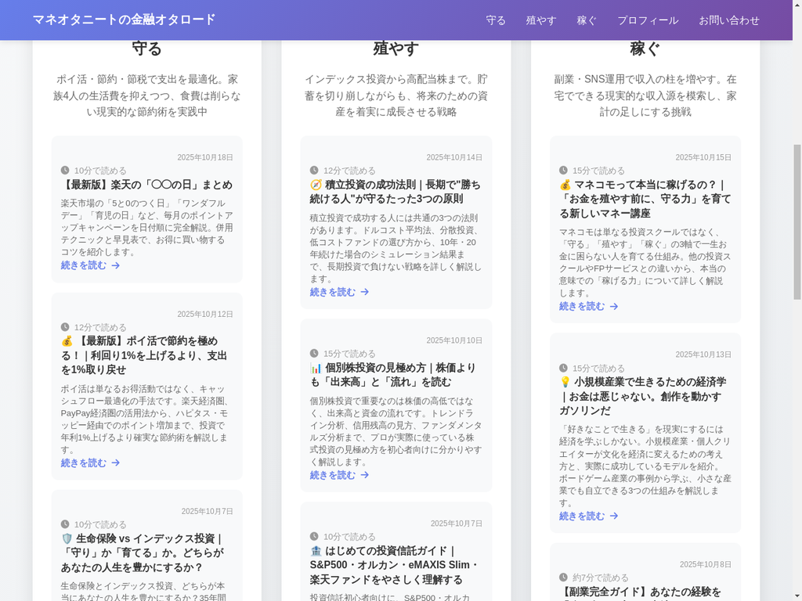

プロジェクト概要
「マネオタニートの金融オタロード」は、節約・投資・副業の3つの柱で資産形成を目指す金融実践ブログです。ヌンチャクコマンドーでは、このブログサイトの企画・デザイン・実装を一貫して担当しました。
🔗 公開サイト: https://pondaikon.github.io/money-otaku-neet-blog/
💻 GitHubリポジトリ: https://github.com/PonDaikon/money-otaku-neet-blog
サイトの特徴
1. 3つの柱で構成されたコンテンツカテゴリ
ブログのコンセプトに合わせて、コンテンツを3つのカテゴリに整理しました。
- 守る: ポイ活・節約・固定費削減で支出を最適化
- 殖やす: インデックス投資・新NISAで資産を増やす
- 稼ぐ: 副業・SNS運用で収入源を多様化
各カテゴリは視覚的に区別しやすいアイコンと色分けで表現し、ユーザーが目的の情報にすぐにアクセスできるようにしました。
2. レスポンシブデザイン
デスクトップ、タブレット、スマートフォンのすべてのデバイスで快適に閲覧できるレスポンシブデザインを採用。CSS GridとFlexboxを活用し、画面サイズに応じて最適なレイアウトを実現しました。
3. JSON管理による動的記事システム
記事データを`articles.json`で一元管理することで、新しい記事の追加や更新が簡単に行えるシステムを構築しました。
{
"id": "article-id",
"title": "記事タイトル",
"description": "記事の説明",
"date": "YYYY-MM-DD",
"category": "mamoru|huyasu|kasegu",
"categoryName": "守る|殖やす|稼ぐ",
"filename": "記事ファイル名.html",
"readTime": "読了時間"
}JavaScriptで記事データを読み込み、トップページやカテゴリページに自動的に表示する仕組みを実装しました。
4. 関連記事の自動表示
各記事ページでは、同じカテゴリの関連記事が自動的に表示されます。これにより、読者が興味のある情報を続けて読みやすくなり、サイト内の回遊性が向上しました。
5. SEO最適化
検索エンジンに適切に認識されるよう、セマンティックHTMLを使用し、メタタグやOGPタグを適切に設定しました。また、読了時間の表示や記事の日付表示など、ユーザーエクスペリエンスを向上させる要素も実装しています。
使用技術
| 技術 | 用途 |
|---|---|
| HTML5 | セマンティックなマークアップ |
| CSS3 | Grid・Flexboxを活用したレスポンシブデザイン |
| JavaScript | Vanilla JSによる動的コンテンツ管理 |
| Font Awesome | アイコンライブラリ |
| Google Fonts | Webフォント |
| GitHub Pages | ホスティング |
デザインのポイント
カラースキーム
金融ブログという性質上、信頼感と安心感を与えるカラースキームを採用しました。紫をメインカラーに、カテゴリごとに異なるアクセントカラー(オレンジ、ブルー、イエロー)を使用し、視覚的な区別をつけています。
タイポグラフィ
可読性を重視し、本文には適切な行間とフォントサイズを設定。見出しは階層構造を明確にし、情報の優先順位が一目で分かるようにしました。
レイアウト
カード型のレイアウトを採用し、各記事が独立した情報として認識しやすいデザインにしました。ホバー時のアニメーションやシャドウ効果で、インタラクティブな体験を提供しています。
プロジェクトの成果
- ✅ レスポンシブ対応により、すべてのデバイスで快適な閲覧体験を実現
- ✅ JSON管理システムにより、記事の追加・更新が容易に
- ✅ 関連記事機能でサイト内回遊性が向上
- ✅ GitHub Pagesで無料ホスティング、運用コストゼロ
- ✅ SEO最適化により、検索エンジンからの流入を促進
ヌンチャクコマンドーのWeb制作サービス
ヌンチャクコマンドーでは、このようなWebサイトの企画・デザイン・実装を一貫して承ります。
対応可能な制作内容
- コーポレートサイト - 企業やサークルの公式サイト
- ブログサイト - 個人ブログや情報発信サイト
- ポートフォリオサイト - クリエイターや制作者の作品紹介サイト
- ECサイト - オンラインショップやBOOTH連携サイト
- ランディングページ - 商品・サービスの紹介ページ
制作の流れ
- ヒアリング - お客様のご要望や目的をお伺いします
- 企画・提案 - サイトの構成やデザインの方向性をご提案
- デザイン制作 - モックアップを作成し、デザインを確定
- 実装 - HTML/CSS/JavaScriptでコーディング
- テスト・納品 - 動作確認後、納品・公開サポート
料金について
プロジェクトの規模や内容により異なりますので、まずはお気軽にお問い合わせください。お見積もりは無料です。
📝 Web制作のご相談・お問い合わせ
Webサイトの制作をご検討の方は、以下のお問い合わせフォームよりご連絡ください。企画段階からのご相談も大歓迎です。
まとめ
「マネオタニートの金融オタロード」は、ユーザーにとって使いやすく、管理者にとって更新しやすいサイトを目指して制作しました。レスポンシブデザイン、動的コンテンツ管理、SEO最適化など、現代のWebサイトに求められる要素を網羅しています。
「構成からデザイン、実装まで。あなたのアイデアを形にします。」
ヌンチャクコマンドー / ぽん大根
コメント